뇌기반 학습·성향 진단 프로그램
그림을 보고 답하는 간단한 활동만으로 아이와 성인의 두뇌 성향을 7개 영역으로 나누어 분석합니다. 연령대에 맞춘 4단계 구성으로 유치부부터 중·고등학생까지 정확하게 진단합니다.
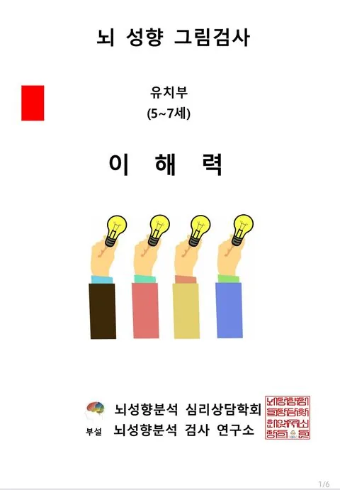
TEST AREAS
뇌성향 그림검사는 7개 핵심 영역을 통해 아이의 강점과 보완이 필요한 영역을 함께 살펴봅니다.
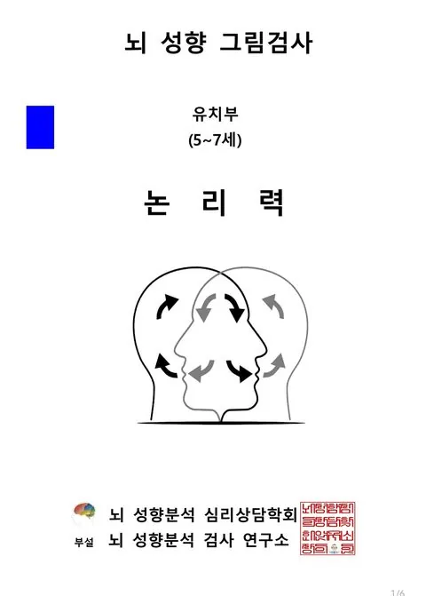
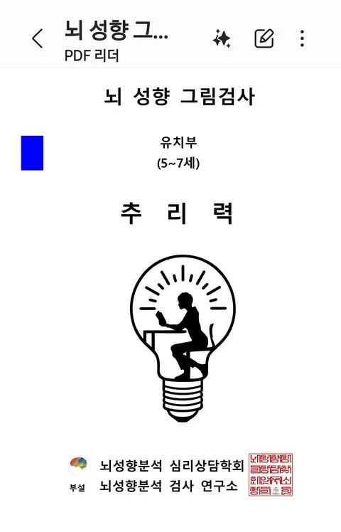
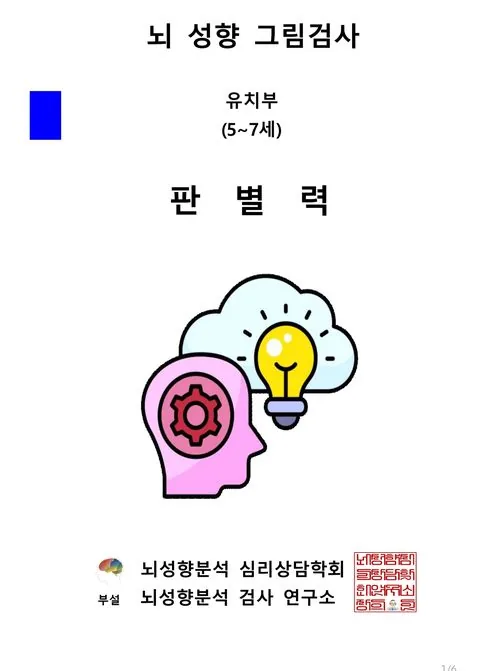
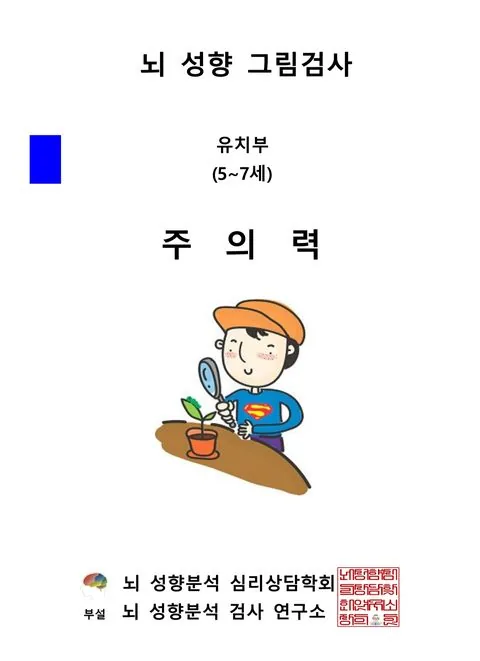
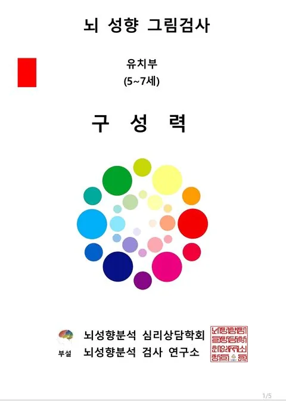
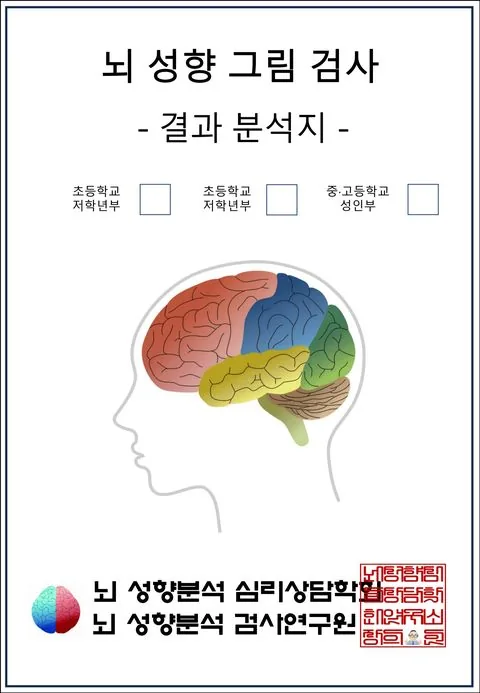
RESULT REPORT
검사가 끝나면 다섯 가지 관점에서 결과를 확인할 수 있습니다. 탭을 눌러 각 항목을 살펴보세요.
가장 높은 점수를 받은 영역이 아이가 자연스럽게 잘 발휘하는 강점입니다. 이 영역은 흥미를 유지시키는 학습 도구로 우선 활용하는 것이 좋습니다.
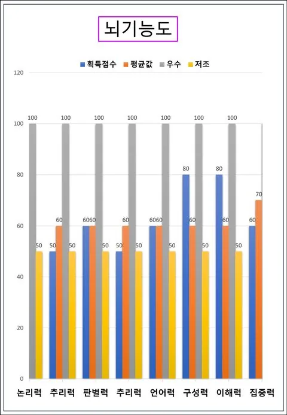
평균보다 낮은 영역은 부족함이 아니라 아직 발달 중인 영역입니다. 놀이와 반복 활동을 통해 자연스럽게 끌어올릴 수 있도록 안내합니다.
좌뇌·우뇌 각각의 활용 비율을 원 그래프로, 7개 세부 영역의 균형을 방사형 그래프로 함께 보여줍니다. 어느 한쪽에 치우쳐 있는지 한눈에 확인할 수 있습니다.
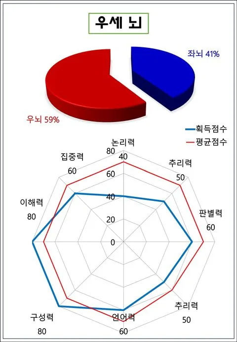
안정도·산만도·집중도 세 가지 지표로 현재 두뇌의 활성 상태를 분석합니다. 학습 환경이나 정서 상태를 점검하는 데 참고할 수 있습니다.
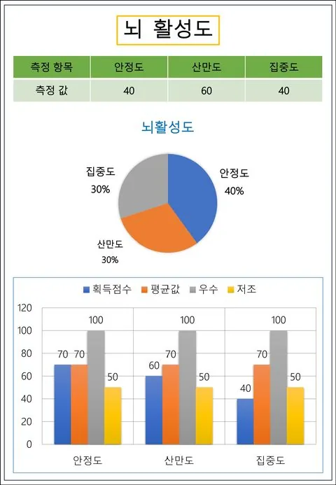
검사 결과를 가정과 교실에서 실제로 어떻게 적용할지 안내하는 페이지입니다. 연령대별 결과보고서 활용법(다음 섹션)과 함께 확인하시면 더 도움이 됩니다.
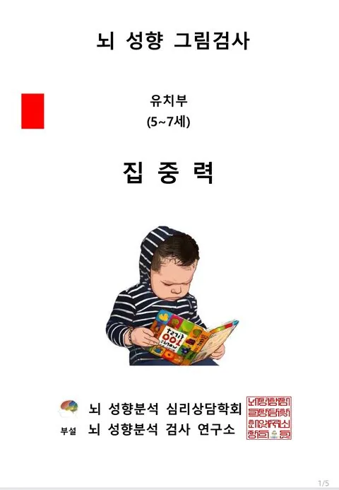
USAGE GUIDE
같은 검사라도 연령대에 따라 결과를 해석하고 활용하는 포인트가 다릅니다.
그림과 색으로 놀이하듯 결과를 설명해 주세요. 점수보다 "무엇을 좋아하는지"에 초점을 둡니다.
학습 습관이 자리잡는 시기입니다. 강점 영역을 숙제·학습 방식에 바로 연결해 보세요.
과목별 성향과 연결해 설명하면 효과적입니다. 스스로 결과를 읽어보게 하는 것도 좋습니다.
진로·전공 탐색과 연결해 활용합니다. 학습 전략 수립과 상담 자료로 함께 제공하세요.
PURPOSE & EFFECT
뇌성향 그림검사는 진단에서 끝나지 않고, 실제 지도와 상담으로 이어지는 것을 목표로 합니다.